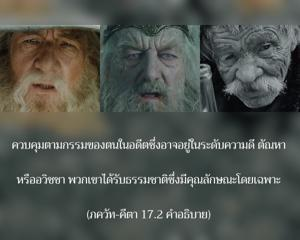
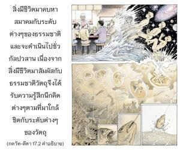

บุคลิกภาพสูงสุดแห่งพระเจ้าทรงตรัสว่า ตามระดับแห่งธรรมชาติที่ดวงวิญญาณในร่างได้รับมาความศรัทธาของเขามีสามระดับ คือ ในความดี ในตัณหา หรือในอวิชชา บัดนี้จงฟัง


พวกที่รู้กฎเกณฑ์ของพระคัมภีร์แต่ด้วยความเกียจคร้านหรือชอบอยู่นิ่งเฉยยกเลิกการปฏิบัติตามกฎเกณฑ์เหล่านี้ ถูกระดับต่างๆของธรรมชาติวัตถุควบคุมตามกรรมของตนในอดีตซึ่งอาจอยู่ในระดับความดี ตัณหา หรืออวิชชา พวกเขาได้รับธรรมชาติซึ่งมีคุณลักษณะโดยเฉพาะ สิ่งมีชีวิตมาคบหาสมาคมกับระดับต่างๆของธรรมชาติ และจะดำเนินไปชั่วกัลปวสาน เนื่องจากสิ่งมีชีวิตมาสัมผัสกับธรรมชาติวัตถุจึงได้รับความรู้สึกนึกคิดต่างๆตามที่มาใกล้ชิดกับระดับต่างๆของวัตถุ แต่ธรรมชาตินี้สามารถเปลี่ยนแปลงได้หากมาคบหาสมาคมกับพระอาจารย์ทิพย์ผู้เชื่อถือได้ ให้เชื่อฟังกฎระเบียบของท่าน และกฎระเบียบของพระคัมภีร์ แล้วจะค่อยๆเปลี่ยนสถานภาพจากอวิชชามาเป็นความดี หรือจากตัณหามาเป็นความดี ข้อสรุปคือ การเชื่ออย่างงมงายในระดับของธรรมชาติโดยเฉพาะจะไม่ช่วยให้พัฒนามาสู่ระดับแห่งความสมบูรณ์ได้ เราต้องพิจารณาสิ่งต่างๆด้วยความระมัดระวัง ด้วยสติปัญญา ด้วยการมาคบหาสมาคมกับพระอาจารย์ทิพย์ผู้เชื่อถือได้ จากนั้นเราจะสามารถเปลี่ยนสถานภาพของตนเองมาสู่ระดับแห่งธรรมชาติที่สูงกว่า